2022/8/03-インターネット
こんにちは！うちは元々クソ回線なのですが、この度、15年間稼働していたWi-Fiが寿命によって力尽きてしまいました....。ゲームもできませんし、ネットも動画も見れないです。唯一見れるのは全然暇つぶしにならないこのサイトだけ、発狂しそう...
2022/7/30-誕生日
こんにちは！私は、この前の28日が誕生日なので、家族にお祝いしてもらいました！ケーキや海老フライ、ピザなど、美味しいものを一杯食べました！！！だけど肝心のプレゼントは九月になってからもらえる予定です...。
2022/7/23-うなぎ
こんにちは！ここに書くのは初めてなので、可笑しいところがあったならすいません💦今日は、お父さんが静岡に行った時に飼ってくれたお土産の、うなぎを食べました！ 口に含んだとたんに旨味がぶわぁーっと舌に広がってきました。 急いでご飯をかきこむと、白米とうなぎのハーモニーが...!ったく、これだからうなぎは好きなんだよっ！！！！